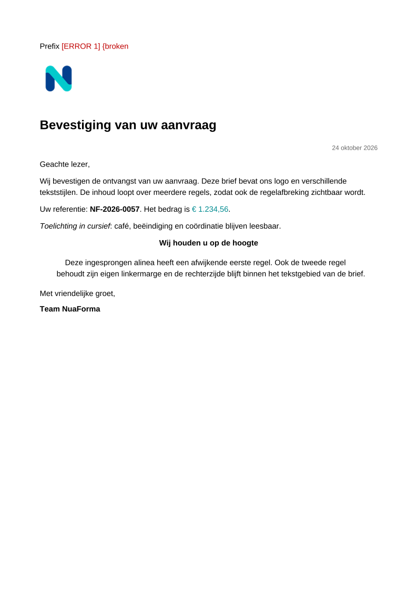
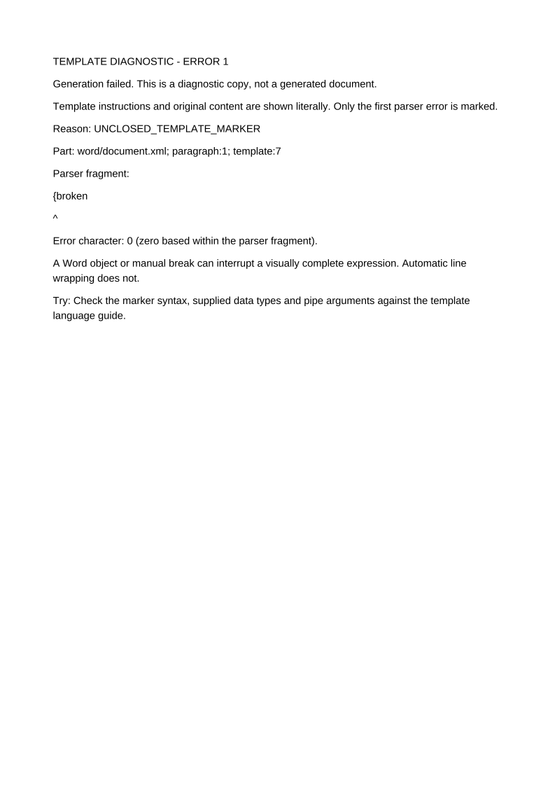

1. Choose your machine
Download and extract the AMD64 kit for Intel/AMD, or ARM64 for Apple Silicon and other ARM64 systems. Create the custom-fonts and extensions folders beside its Compose file.


DEVELOPMENT PLAYGROUND
Build a request, generate a document and find a template error. Use the same engine and API as your application, with a browser to help you explore.
Your installation, your documents. This website is a guide, not a hosted Playground. The Playground runs on your own development installation. Development responses and logs can contain document text; use synthetic data and your own access controls.
01 · GET STARTED
Use the development Playground image. The production image contains the API without the Playground interface.
Download and extract the AMD64 kit for Intel/AMD, or ARM64 for Apple Silicon and other ARM64 systems. Create the custom-fonts and extensions folders beside its Compose file.
Run from the extracted folder:
docker compose up -dOpen http://localhost:8080/playground/ in your browser. Choose either the production or Playground kit for port 8080.
Choose DOCX or PDF output, upload your Word template and enter its JSON data. Inspect the available providers and options. Start with the synthetic example kit if you do not yet have a template.
Generate the document, then download the result. Export the JSON request and curl instructions to repeat it from your application or terminal. The template and resource files remain separate uploads.
02 · TRY AN EXAMPLE
Type these markers as ordinary text in Word. Paste the data into the Playground, generate, then change one value and try again.
Dear {customer.name},With the data below, the name becomes Ada Lovelace.
{#if approved}Approved{#else}Draft{/if}Change approved from true to false to switch the text.
{issuedOn | date("dd-MM-yyyy")}The date becomes 28-10-2026. See the date and time reference for other patterns.
{
"customer": {"name": "Ada Lovelace"},
"approved": true,
"issuedOn": "2026-10-28"
}Want a fuller test? The seven downloadable scenarios include nested conditions and loops, null values, watermarks, Word output and images. The template guide explains the supported syntax and Word structure rules.
03 · CHOOSE FONTS
The provider explorer and font controls list the available families and faces. Bundled fonts need no upload. Mounted fonts can be selected through their resource IDs.
Upload a standalone TTF or OTF face and enter its actual family, style and resource ID. The Playground adds the font declaration and binary resource together. Font selection supplies a font; it does not rename or replace the font used in Word.
PDF output embeds the used faces and checks technical embedding permissions. Names alone do not guarantee glyph coverage. See fonts and operations for deployment guidance.
04 · TROUBLESHOOT GENERATION
Repeat the request in your development Playground with the same output format, PDF profile and resources. Start with the error beneath Generate document.
Copy the first line in full, including the description immediately after the error code. The description explains what failed and helps distinguish problems that share the same code.
INVALID_TEMPLATE: A template marker is missing its closing braceAlso copy Cause, Part, Document location, Location, the XML path and the Try suggestion when shown. If a parser error shows an expression and a caret, include the relevant fragment and error position if you can share them safely. Save the generation Request ID before retrying.
For a missing font, record the family and variant, for example Calibri and boldItalic. For a layout error, include any required and available space shown in Cause.
For a template syntax error, open Download diagnostic PDF if offered and look for ERROR 1. If the PDF fails, try Download marked DOCX when available. The original error beneath Generate document is still useful if neither download succeeds. See a marked example ↓
For an unsupported Word feature, clean the template and inspect cleanup-report.txt in the ZIP. Include the relevant removal, package part, XML path and reason. A clean structure can still fail during generation.
With the Compose kit, run this from the folder containing compose.yaml. Search the output for the generation request ID and copy the relevant GENERATION_REJECTED or DOCUMENT_SOURCE_DETAIL entry if present.
docker compose logs --tail=200 nuaformaDiagnostic downloads have their own request IDs. If a download also fails, label its error and ID separately.
Alongside the diagnostics you collected above, include the NuaForma version or image tag, output format and PDF profile if applicable, steps to reproduce, and expected and actual results. If possible, attach a small synthetic DOCX and JSON that fail in the same way.
Before posting publicly, remove private text, file paths and credentials from excerpts, logs and request JSON. Diagnostic downloads can contain template or input data. Share a synthetic copy if a file is needed.
XML coordinates refer to the DOCX structure. Production omits excerpts and has no inspection routes. See the complete diagnostic guide ↗.
The diagnostic PDF marks the first locatable error in a literal copy of the template. The explanation page shows what the parser read. Correct the original Word file and generate again to see whether there is another error.


These pages come from a synthetic template. The diagnostic download uses standard PDF and an inline marker can change wrapping. In Preview with error markers (DOCX), malformed fragments stay literal and independently valid expressions can be evaluated. Structural if and each blocks stay literal and display [LITERAL BLOCK].
05 · CLEAN A TEMPLATE
Available in 0.5.0-alpha.6, the development Playground can remove unsupported DOCX parts, objects and formatting from a separate template copy. You decide whether the result is acceptable in Word.
Select your DOCX, open Clean a template for native PDF below the file selector, and choose Clean template and download report. Only the template is sent; JSON data and uploaded fonts/resources are not used. Progress, errors and the ZIP download appear inside that same cleanup block, beside its control. Selecting another template clears the previous cleanup link. Your original file is unchanged.
cleaned-template.docx contains the copied template. Remaining variables, pipes, if/each blocks and even malformed markers stay literal. Unsupported containing objects can be removed with their text. cleanup-report.txt lists every removal or restoration, its package part, available XML location and reason.
Open the copied DOCX in Word and read the report before replacing the original. Unsupported visible content or styling may be lost, and required supported defaults may be restored. The report can help explain missing functionality in an issue; review identifying names/locations before sharing it. Include the NuaForma version and a small, non-confidential example where possible.
Version 0.5.0-alpha.6 retains qualified signed/hanging indents, paragraph-mark metrics and measured header/footer bands, including supported EMF logos and footnotes. Qualified picture editing locks, no-fill/no-line metadata and the canonical local-DPI extension are retained. Long classic EMF descriptions are handled without a false OpenGL rejection. In alpha.7, bounded header-description text is unused metadata: a missing terminator alone no longer removes an otherwise supported logo. Invalid ranges, actual OpenGL and unknown graphical constructs remain unsupported. Unsupported image constructs can still be removed; inspect the report and copied document. Technical checks establish native source-profile support; you alone accept the contents and appearance. Required fonts and normal template syntax/data checks still apply when generating PDF. Unsafe or unresolved packages, cancellation and exceeded limits do not produce a cleaned template. This tool is absent in production; ordinary generation remains strict. See the complete cleanup guide ↗.
YOUR NEXT STEP
Use the Playground to understand your template and request. Use the same REST API or embedded engine in your application.
Version 0.5.0-alpha.6 retains qualified floating header/footer logos, text frames and page fields through template cleanup and PDF rendering, including documents with footnotes. Unsupported effects or active relative sizes still produce a specific diagnostic. Cleanup checks structural support; supplied fonts, template syntax/data and final rendering still need review. External template targets are never fetched.
Version 0.5.0-alpha.6 names the rejected drawing element or attribute, for example effectLst/outerShdw or xfrm/@rot, with source coordinates in the named document part. Valid style revision metadata stays in your template. Cleanup can remove the focused unsupported effect or optional attribute instead of the entire logo. Normal generation remains strict; review any visual changes in the cleaned copy.